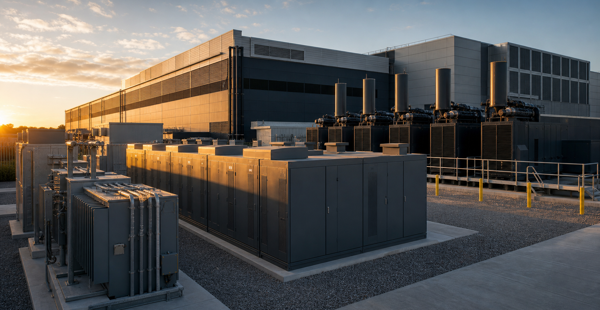

Building a Resilient Power Stack for AI

Reliability is not created by a single piece of equipment. It comes from a coordinated stack of utility service, distribution, short-duration ride-through, backup generation, controls, protection, and operating procedures designed around the workload.
Begin With the Failure Modes
Resilience planning should identify what can fail, how long the interruption may last, and which loads must continue. A brief voltage disturbance, a feeder outage, and a regional grid event require different responses. Defining those scenarios prevents redundant equipment from being added without a clear purpose.
Give Every Layer a Job
Utility feeds provide normal power. UPS or battery systems bridge short events and support controlled transitions. Generators or other firm sources address longer outages. Protection and controls coordinate the layers so that one event does not create a larger interruption.
Match Resilience to the Workload
Not every load has the same priority. Compute, networking, cooling, pumps, controls, and support systems must be sequenced so the facility remains thermally and electrically stable. The design should also account for the time and power required to restart large AI clusters.
Prove the System Under Load
Redundancy on a drawing is only a claim until it is tested. Integrated commissioning should verify transfers, ride-through, load steps, alarms, fuel or energy limits, and recovery to normal operation. Procedures and trained operators complete the technical design.
The Bottom Line
A resilient AI facility uses multiple power resources as one system. Clear failure scenarios, defined roles, coordinated controls, and real testing turn individual assets into dependable infrastructure.